所在地：〒379-2166 群馬県前橋市野中町１３９−４
連絡先：shinaji5963@gmail.com / 080-5513-1029
営業日：金・土曜 14:00〜22:00
※来店前にお電話またはSMSでご連絡ください。
紹介
1990年、創業者・中村しなじが開業したバー。現在は子どもと孫による家族経営。アットホームな雰囲気で、友人やご家族と楽しい時間を過ごせます。外国人も歓迎。英語対応可。
 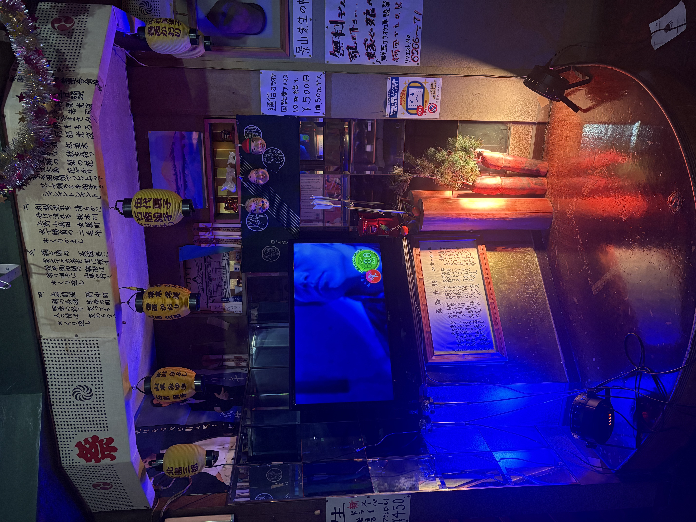
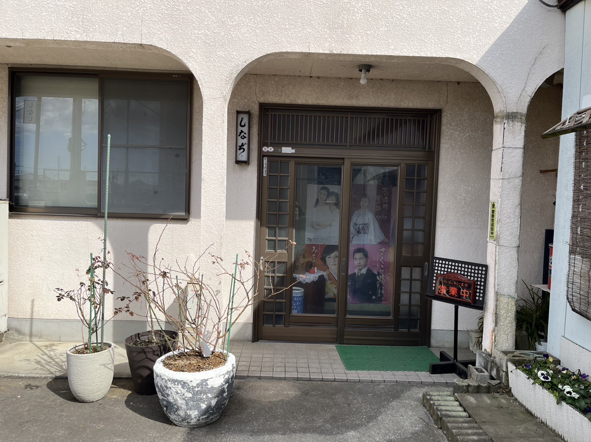
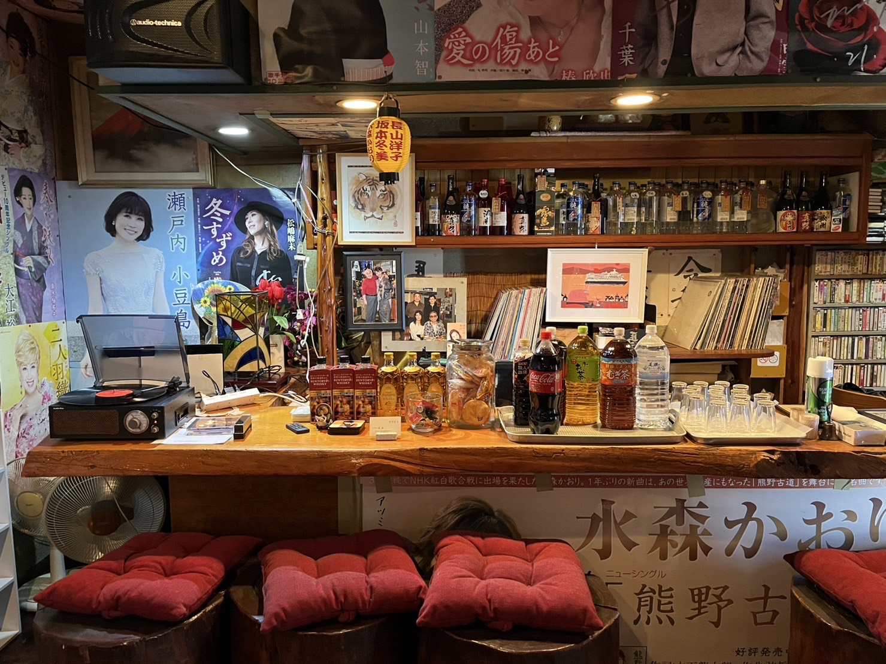
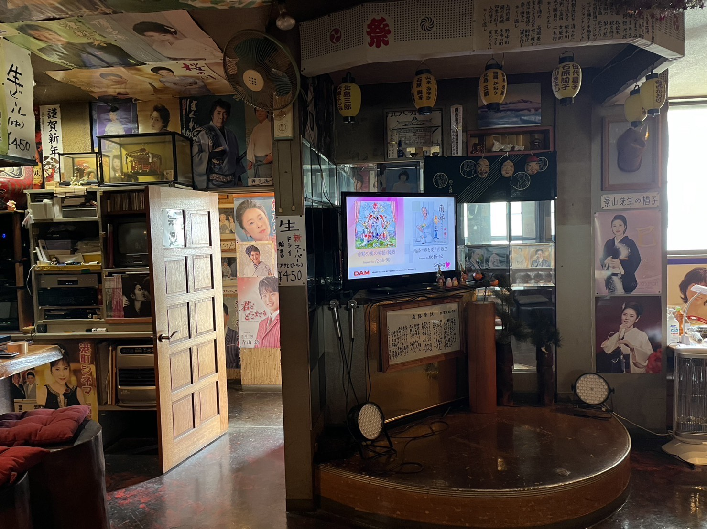
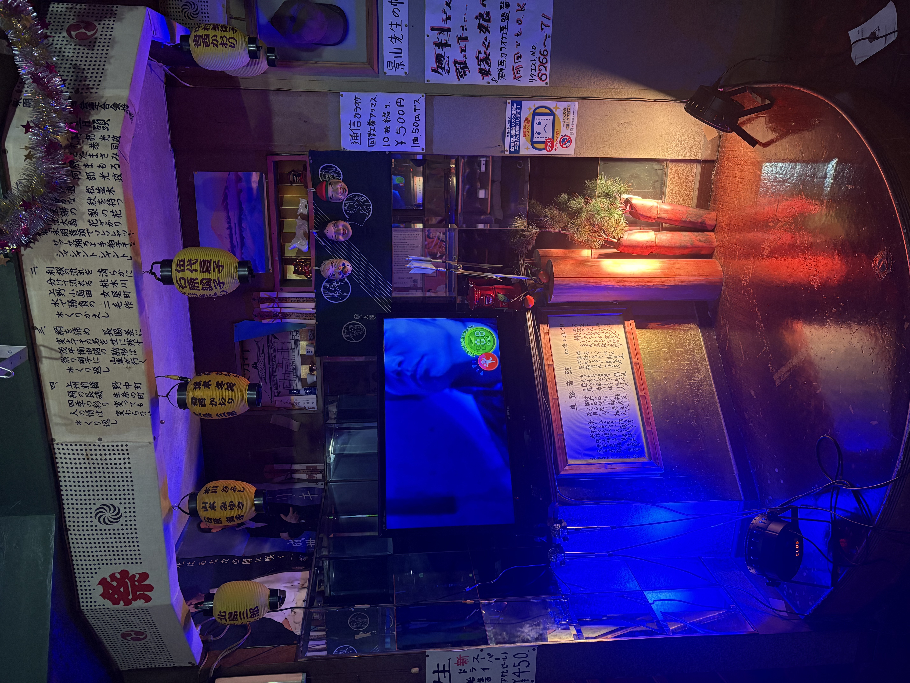
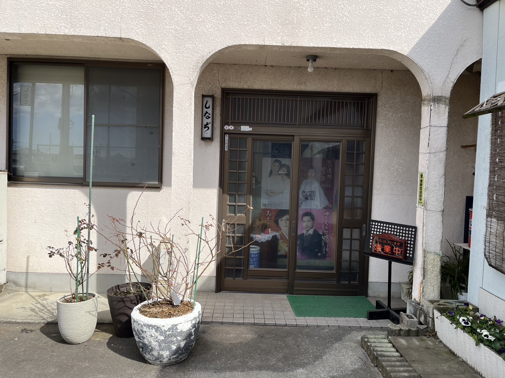
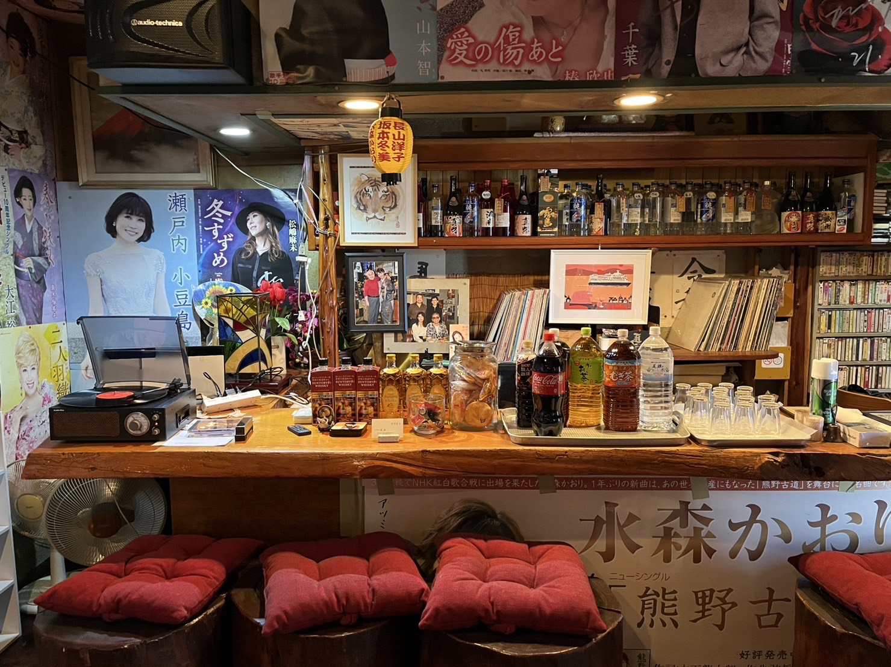
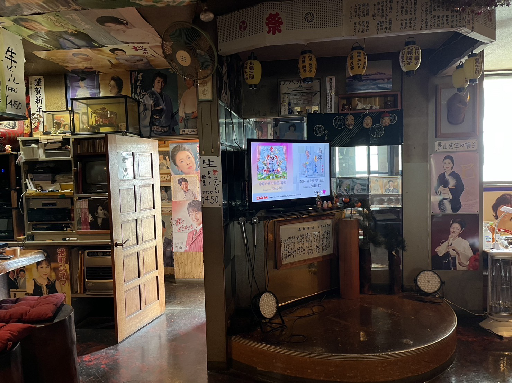
前橋市のローカルなカラオケ
所在地：〒379-2166 群馬県前橋市野中町１３９−４
連絡先：shinaji5963@gmail.com / 080-5513-1029
営業日：金・土曜 14:00〜22:00
※来店前にお電話またはSMSでご連絡ください。
1990年、創業者・中村しなじが開業したバー。現在は子どもと孫による家族経営。アットホームな雰囲気で、友人やご家族と楽しい時間を過ごせます。外国人も歓迎。英語対応可。
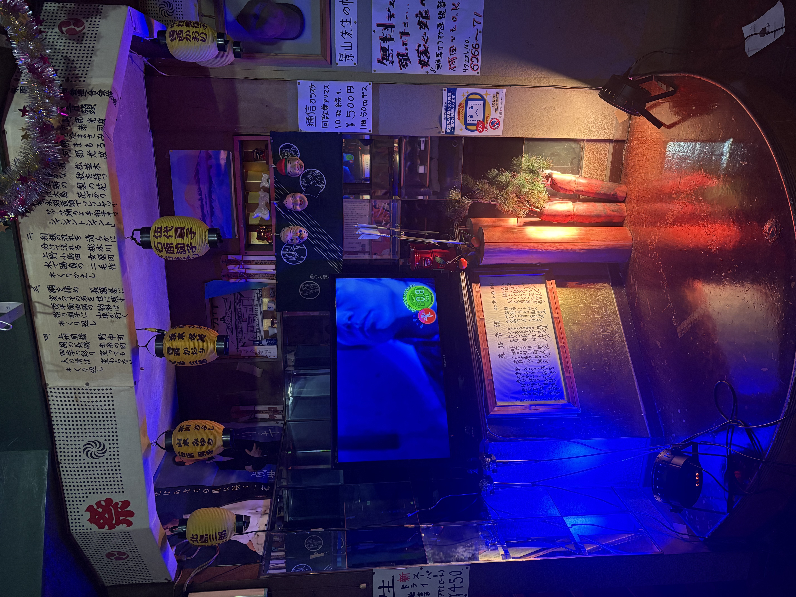
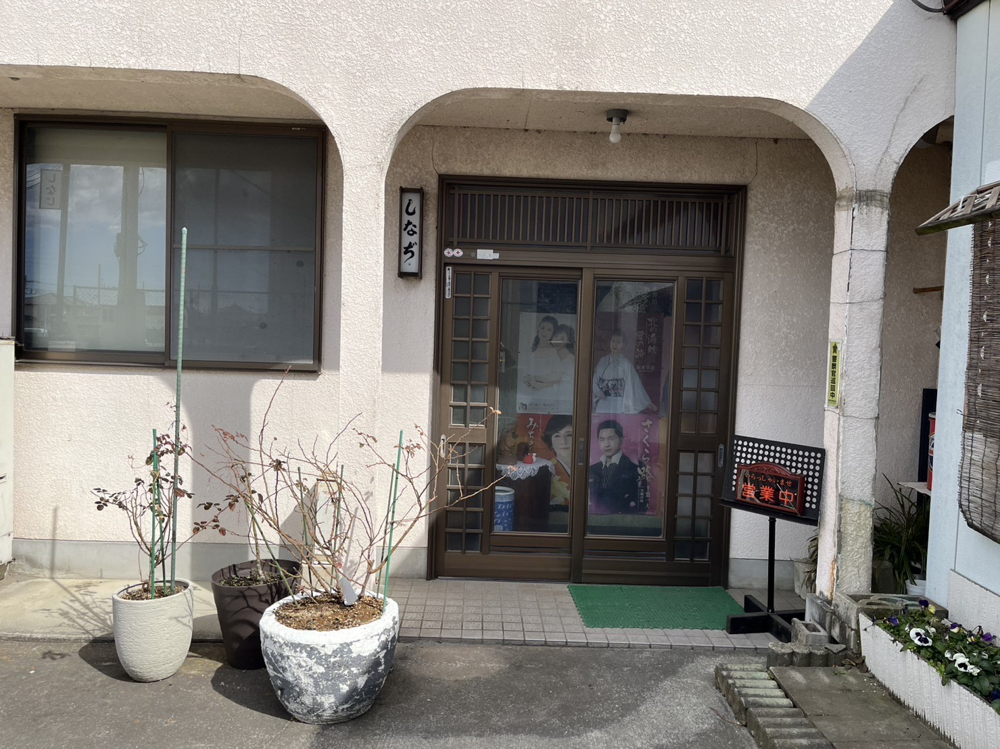
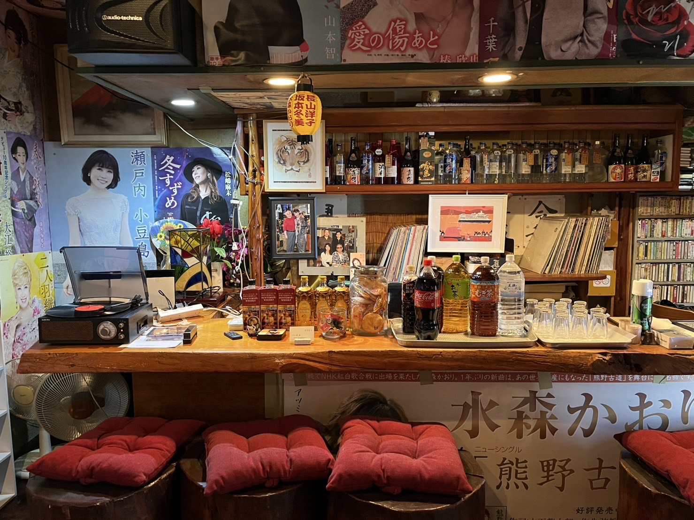
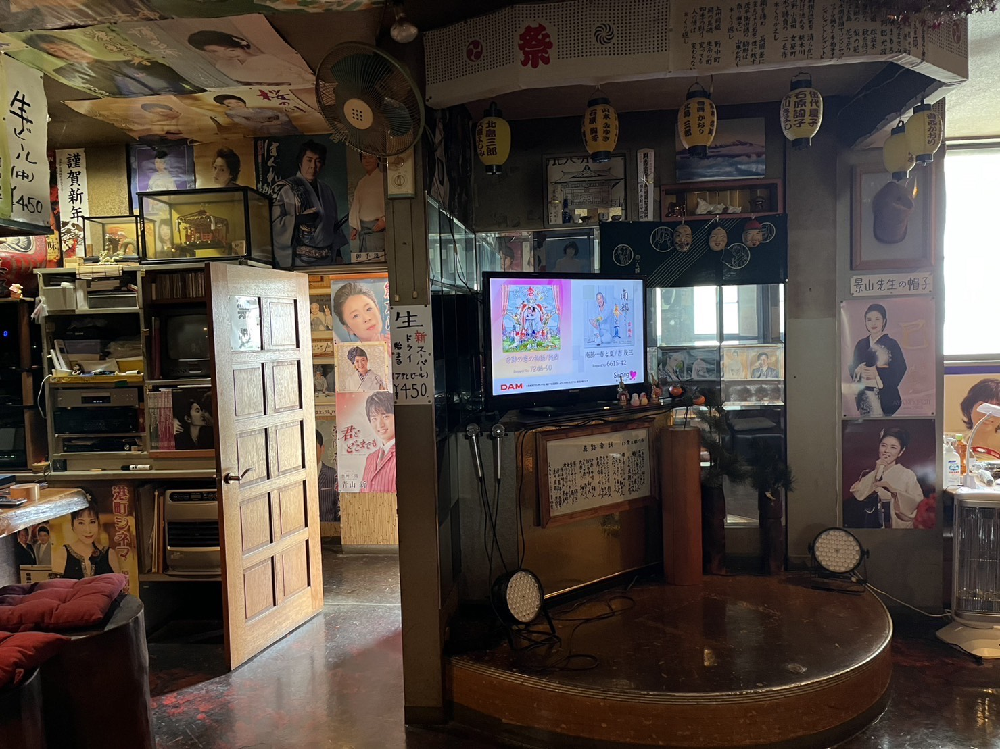